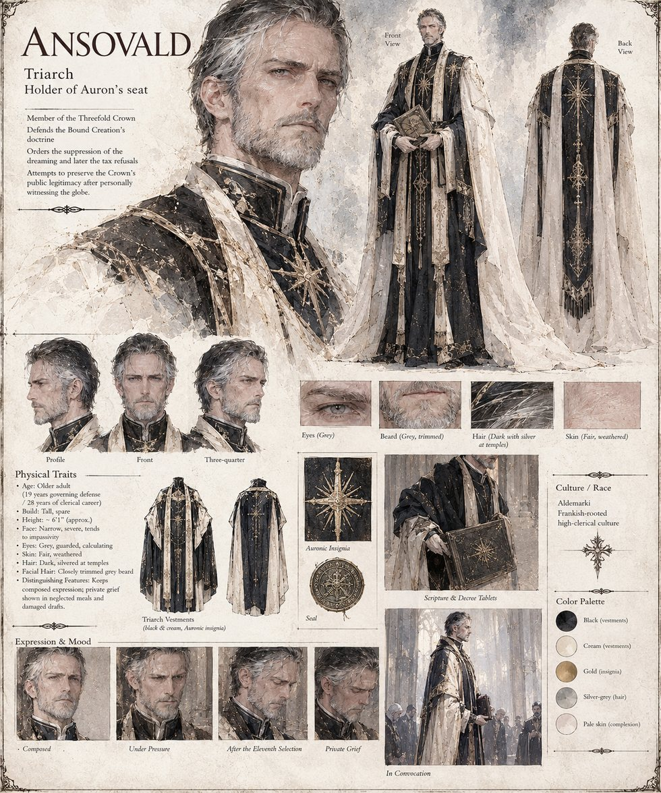

Ansovald
Triarch of the Threefold Crown · holder of Auron's seat · defender of the Bound Creation · older adult by his sheet
Holder of Auron's seat on the Crown, who has governed the defense of the Bound Creation for nineteen years without once losing a doctrinal contest, and who conducts all his business on the palace's ground floor: a childhood fall from a granary beam has left him with a vertigo that he describes to visitors as a preference for the ground and to no one as a fear. He has never climbed the bell-tower of the cathedral he consecrated. He reads Hraban's letter from Halstead twice and is recorded as saying only that independent observation is the one heresy scripture has no answer for. His sermon that autumn on the folly of trusting one's own eyes does not name Halstead; Ansdorf is purged with far less debate beforehand, since he has concluded that debate is itself a contagion; and he calls the tax refusals a second heresy and orders both suppressed with equal severity.
He dreams with the rest of Dornhal and says nothing publicly for three days: a burned draft of an address, meals sent up untouched, a man failing to hold in one hand the fact that he has seen the world is round and in the other the fact that he personally ordered a thousand people killed for saying so first. On the second night he, who has not climbed above the palace's first landing since boyhood, asks to be helped up to the roof and stands for most of an hour at the parapet with both hands flat on the stone, looking not at the stars but at the courtyard cobbles forty feet below, and comes down without a word. When he finally speaks, it is to say that the Crown could survive being wrong about the heavens if it did not also become known for having always known it, which the manuscript calls the single most honest sentence he has uttered in twenty-eight years, and which satisfies no one.
The sheet draws him tall and spare, about six foot one, with a narrow, severe face, guarded grey eyes, dark hair silvered at the temples and a closely trimmed grey beard, in black-and-cream Triarch vestments with the Auronic star, holding scripture and decree tablets; its expression studies run from composed to private grief. It gives nineteen years governing the defense and twenty-eight of clerical career, which match the manuscript's figures.
“Independent observation is the one heresy scripture has no answer for.”